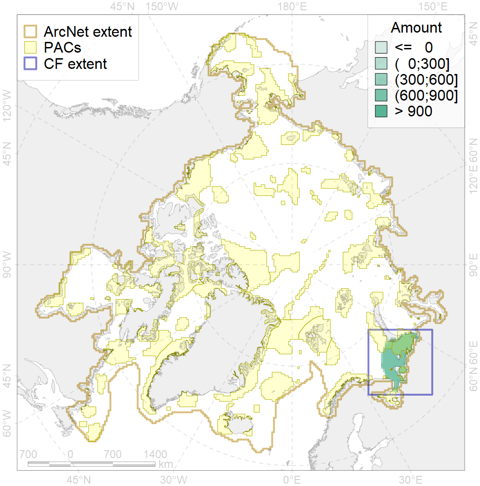
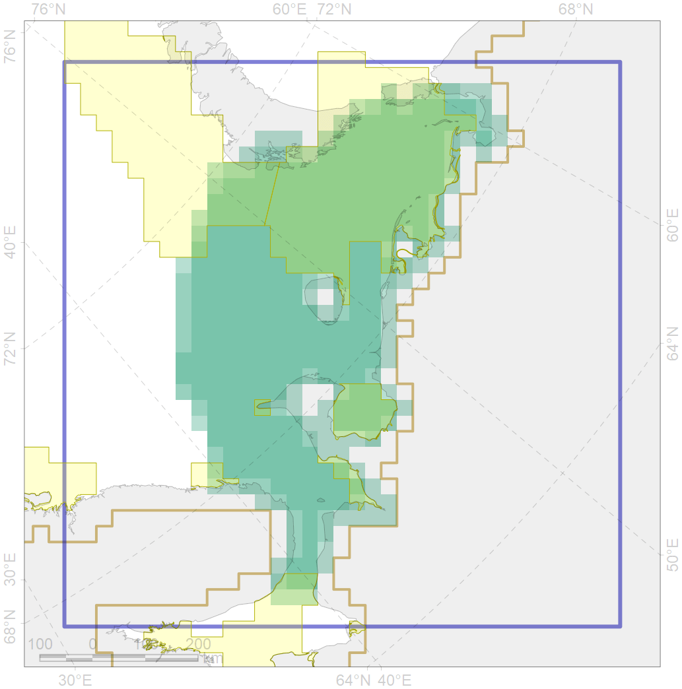

4089

| CF ID | 4089 |
| CF Name | Fish zoogeography, Arctic Region, Subarctic Transitional-Atlantic Province, Mesen’ – Pechora aquatory of the Barents District |
| Time Period | 2019 |
| Source(s) | Chernova, produced for this project |
| Seasonality | January-December |
| Depth Horizon | |
| Methodology | expert opinion based on summarised data of trawl surveys and multiple publications |
| Author Name | N. Chernova |
| Notes | |
| Conservation Target Set in the Scenario | 0.19691 |
| Conservation Target Achieved in the Scenario | 0.441 (Scenario: 223.9%) |
| PAC ID | Proportion in the PAC | Contribution to ArcNet Target Achievement | PAC’s Contribution to the Achieved Target |
|---|---|---|---|
| 20 | 32.9% | 160.8% | 71.8% |
| 21 | 5.1% | 21.8% | 9.8% |
| 23 | 3.8% | 16.7% | 7.5% |
| 24 | 1.2% | 5.5% | 2.4% |
| 25 | 0.6% | 2.2% | 1.0% |
| 26 | 1.3% | 3.7% | 1.6% |
| inner | 44.8% | 210.7% | 94.1% |
| outer | 55.2% | 13.2% | 5.9% |